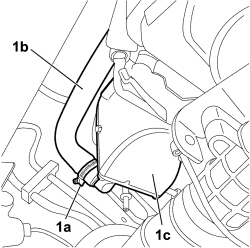
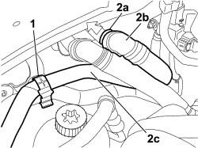

5020M58 HOSE FOR COOLANT ENTERING ADDITIONAL SELF-STANDING HEATER UNIT - R R
- Path
- Procedures > 50 AUXILIARY UNITS > 5020 HEATER > 5020M SUPPLEMENTARY INDEPENDENT HEATER > 5020M58 HOSE FOR COOLANT ENTERING ADDITIONAL SELF-STANDING HEATER UNIT - R R
- Kind
- repair procedure (removal / refitting; the operation number is the code)
- Applies to
- engines: 1.9 JTD 8v, 1.9 JTD 16v, 2.4 JTD 20v; all production periods
- Interactive page
- https://sloeber94.github.io/elrnDB-fCrm/en/#/194001936
Applies to: engines: 1.9 JTD 8v, 1.9 JTD 16v, 2.4 JTD 20v; all production periods
- Have a suitable container ready for collecting the residual engine coolant.
Applies to: engines: 1.9 JTD 8v, 1.9 JTD 16v, 2.4 JTD 20v; all production periods
 Removing
Removing
 Refitting
Refitting- Turn the ignition key to the OFF position.
- Disconnect the negative battery terminal.
Description | Connectors | |
|---|---|---|
BATTERY |
Op. 7055B54 UNDER ENGINE PROTECTION/GUARD - R.R.
Op. 0010T20 ENGINE COOLANT - CHANGE
1 Loosen the retaining band (1a) and disconnect the flexible coolant inlet pipe (1b) on the additional indenpendent heater unit (1c).

Applies to: engines: 1.9 JTD 8v, 1.9 JTD 16v, 2.4 JTD 20v; all production periods
Op. 1016A10 SOUND-PROOFING COVER - R.R
1. Release the flexible pipe from the retaining clip.
2. Using the retaining clips (2a) disconnect the rapid connector (2b) from the passenger compartment heater and remove the flexible coolant inlet pipe (2c) for the additional heater unit from the vehicle.

Applies to: engines: 1.9 JTD 8v, 1.9 JTD 16v, 2.4 JTD 20v; all production periods
Refitting
Removing- Position the flexible coolant inlet pipe on the additional independent heater unit.
- Connect the rapid connector to the passenger compartment heater and attach the retaining clip.
- Connect flexible pipe to the independent additional heater and tighten the retaining band.
Op. 7055B54 UNDER ENGINE PROTECTION/GUARD - R.R.
- Attach the flexible pipe to the retaining clip.
Op. 1016A10 SOUND-PROOFING COVER - R.R
- Connect the negative battery terminal.
Description | Connectors | |
|---|---|---|
BATTERY |